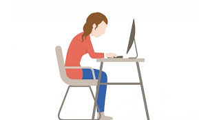
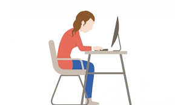

Aan het einde van deze opleiding kan ik goed een website maken, inclusief geavanceerde functionaliteiten zoals een slider en modals. Daarnaast kan ik effectief samenwerken binnen een team en begrijp ik hoe developers processen structureren.